ARIMA vs. long term forecasts
© 2017 Anton Lebedevich
Anton Lebedevich:
- data science engineer
- solves distributed performance issues
- loves time series and anomalies
- blogs at mabrek.github.io
A time series is a collection of observations made sequentially in time.
Forecasting Task (daily)
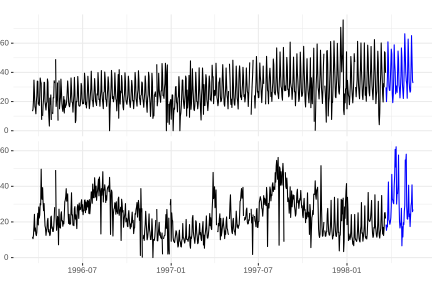Forecasting Task (daily)
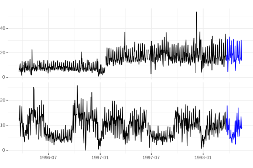Forecasting Task (half-hourly)
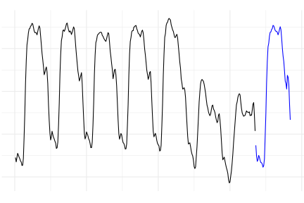Forecasting Challenges
- multi-step ahead
- many seasons (year, month?, week, day)
- external predictors (weather, promo)
- data gaps
- outliers, changepoints
- holidays (zero values)
- irregular (sometimes)
- short train
SARIMA
$$ \phi_p (L) \tilde \phi_P (L^s) \Delta^d \Delta_s^D y_t = A(t) + \theta_q (L) \tilde \theta_Q (L^s) \zeta_t $$
SARIMA
$$ \phi_p (L) \tilde \phi_P (L^s) \Delta^d \Delta_s^D y_t = A(t) + \theta_q (L) \tilde \theta_Q (L^s) \zeta_t $$

ARIMA (simple form)
$$ y'_{t} = c + \phi_{1}y'_{t-1} + \cdots + \phi_{p}y'_{t-p} \\ + \theta_{1}e_{t-1} + \cdots + \theta_{q}e_{t-q} + e_{t} $$

Dirac Delta Function
used to measure impulse response
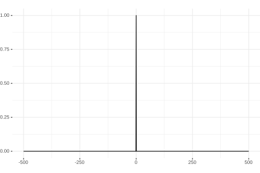AR(1) Impulse Response
$$ y_{t} = 0.9y_{t-1} + e_{t} $$
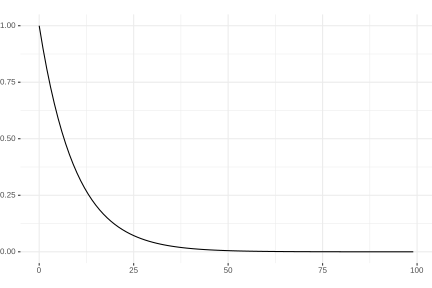AR(2) Impulse Response
$$ y_{t} = 0.3y_{t-1} + 0.3y_{t-2} + e_{t} $$
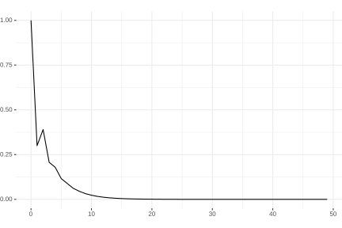AR(2) Impulse Response
$$ y_{t} = 0.9y_{t-1} - 0.85y_{t-2} + e_{t} $$
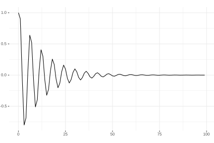AR(2) Impulse Response
$$ y_{t} = 0.08y_{t-1} + 0.9y_{t-2} + e_{t} $$
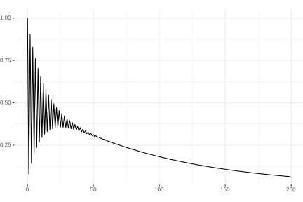I(0) Process (White Noise)
$$ y_{t} \sim \mathcal{N}(0,1) $$
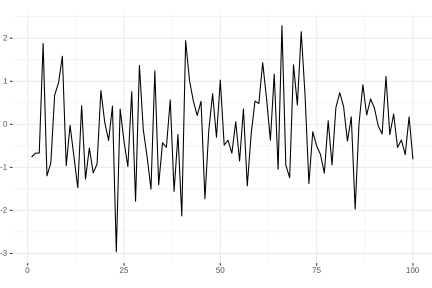I(1) Process (Random Walk)
$$ y_{t} = y_{t-1} + e_{t} $$
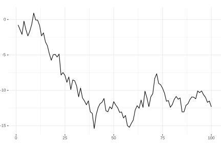I(2) Process
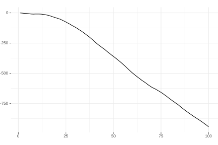Weekly Pattern + Noise
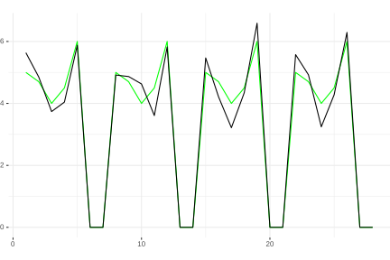auto.arima
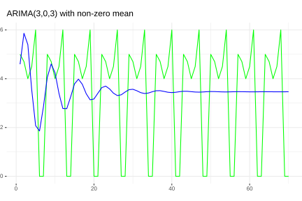
ellisp.github.io/blog/2015/09/30/autoarima-success-rates
ARIMA(7, 0, 0)
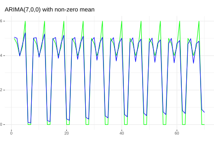SARIMAX Challenges
- ÷ multi-step ahead
- - many seasons (year, month, week, day)
- + external predictors (weather, promo)
- - data gaps
- - outliers, changepoints
- - holidays (zero values)
- - irregular (sometimes)
- ÷ short train
What to Do Instead
- naive seasonal
- linear (with lots of feature engineering, lags)
- trees (XGBoost, etc..)
- assembles
- neural networks
- bayesian
- multiple output
- …
Out-of-sample Extrapolation

ellisp.github.io/blog/2016/12/10/extrapolationNN doesn't Extrapolate Too
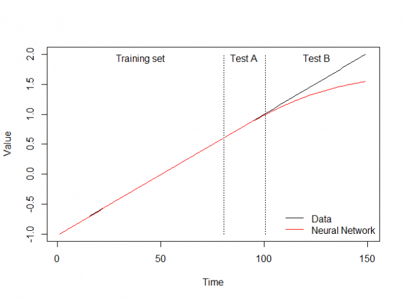Preprocessing for Trees and NN
- detrend
- differentiate
- remember en.wikipedia.org/wiki/Unit_root
Example Workflow
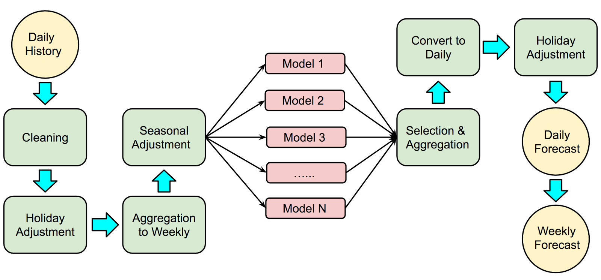www.unofficialgoogledatascience.com/2017/04/our-quest-for-robust-time-series.htmlCompetitions
Links
multithreaded.stitchfix.com/blog/2016/04/21/forget-arima/
robjhyndman.com/hyndsight/longseasonality/
www.unofficialgoogledatascience.com/2017/04/our-quest-for-robust-time-series.html
thuijskens.github.io/2016/08/03/time-series-forecasting/
video "Time-series and how to cook them with ML" by Alex Natekin @ Data Fest Kyiv 2017
github.com/robjhyndman/forecast
github.com/facebookincubator/prophet
forecasting textbook www.otexts.org/fpp
Q&A
Anton Lebedevich
mabrek@gmail.com